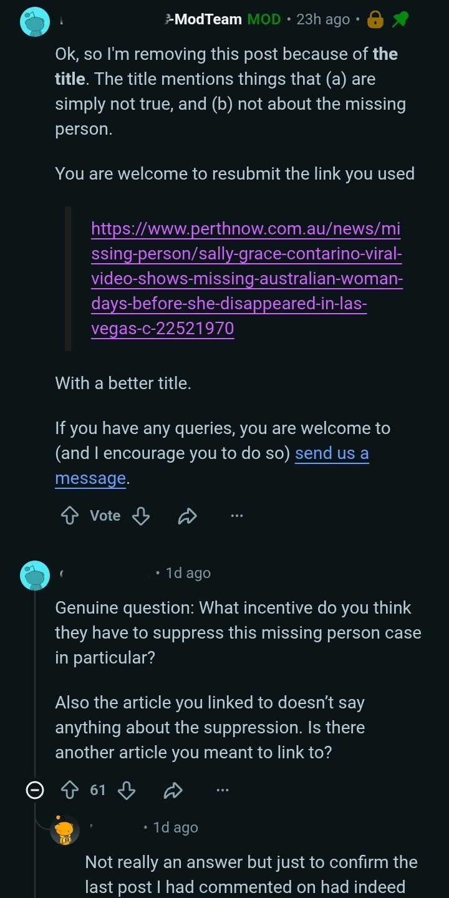
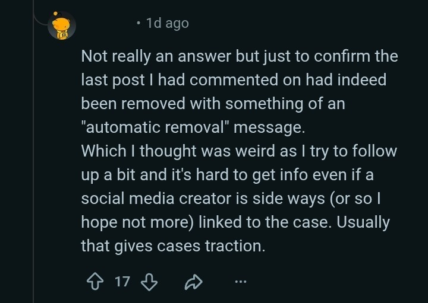
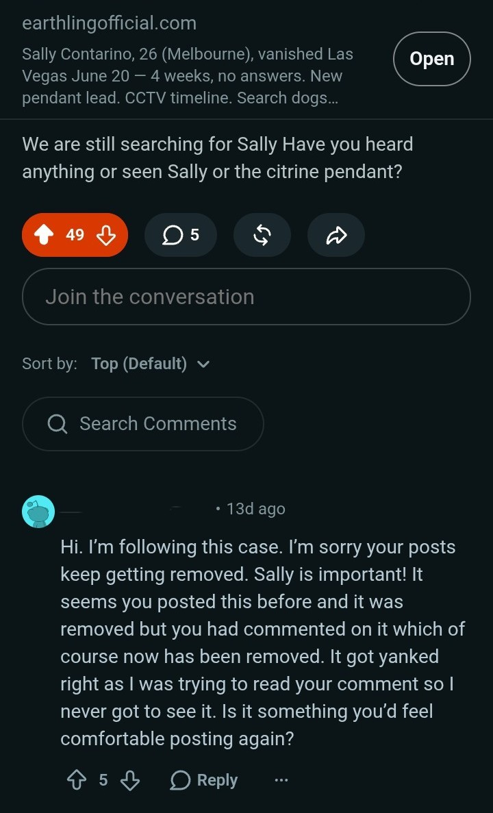
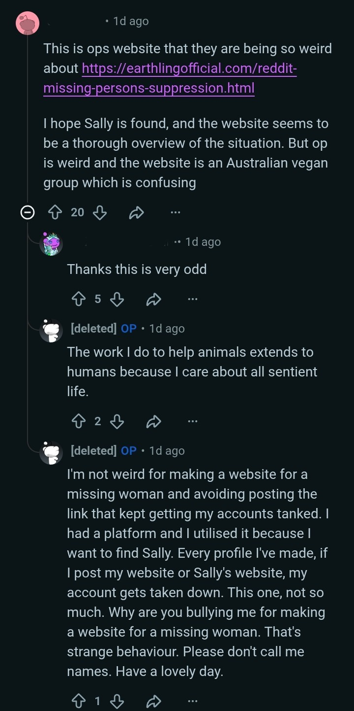
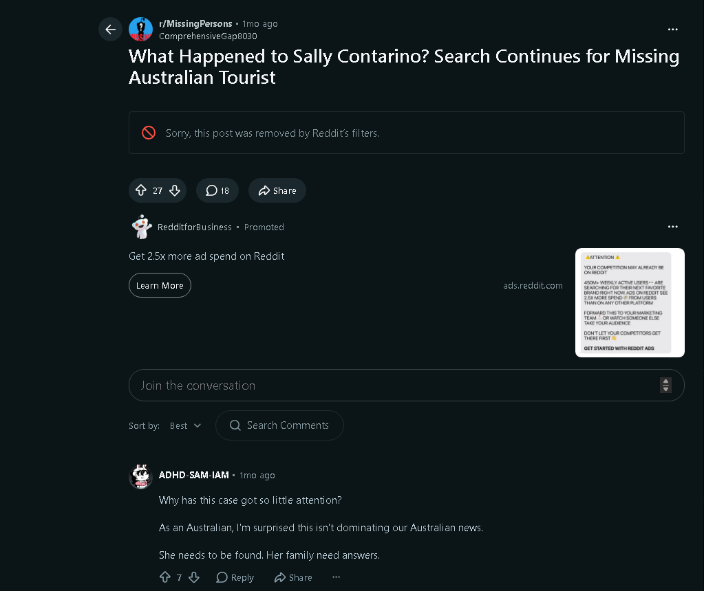
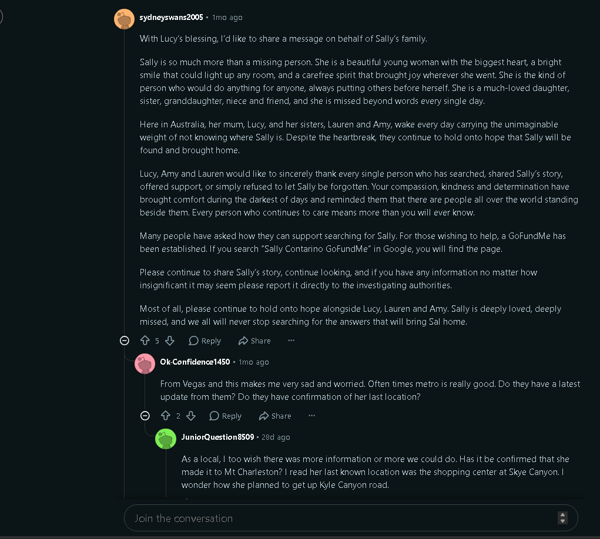

A missing woman's posts keep getting removed from the site that calls itself the heart of the internet.
This is the running record: every screenshot, every mod message, every removal notice tied to posts about Sally Grace Contarino, 26, missing from Las Vegas since June 20, 2026. Four accounts down. Hundreds of thousands of views deleted. One pattern.
Who is Sally Contarino, and why does this keep happening
Sally Grace Contarino is a 26-year-old woman from Melbourne who travelled solo through the western United States in June 2026, with stops in Las Vegas, Mt. Charleston and a planned leg through Southern California. She last messaged a friend on June 20 to say she was heading out for a hike near Lone Mountain. She never boarded her return flight to Melbourne the next day, and nobody has confirmed hearing from her since.
Police footage places her at a Smith's Marketplace on West Skye Canyon Drive at 1:02pm that Saturday, buying supplies. Days earlier, on June 17, a stranger with a headset camera approached her outside a 7-Eleven on Boulder Highway and asked for her number on video — footage that later became one of the most-watched pieces of the public record around her disappearance. Her sister Amy has said the family fears foul play. Las Vegas Metro has called her an endangered missing adult and continues ground and K9 searches.
One detail the family has specifically asked the public to watch for: a citrine pendant on a silver chain, designed by Bali-based jeweller John Hardy, that Sally was known to wear often and that wasn't found among her belongings. It's the kind of small, specific, findable detail that missing persons cases live or die on — the kind of detail that depends entirely on strangers seeing it and remembering.
Full details, CCTV timeline and how to report a sighting: earthlingofficial.com/find-sally-contarino.html
Three attempts. Three removals. Same result.
This isn't one bad night on Reddit. It's a repeating sequence, and it repeated again today.
Bullied, mass-reported, account gone
A post about Sally picked up traction — hundreds of upvotes, tens of thousands of views. Then the pile-on started: mockery in the comments, a wave of reports, and the account was gone. No warning, no explanation. Best estimate is automated moderation acting on the malicious reports rather than any actual violation. Roughly 200,000 views on Sally-related content vanished with it.
DM'd the mod team first. Silence. Then removal anyway.
Learning from round one, the next post went out to r/MissingPersons with the moderators messaged in advance, in good faith, before posting. No reply came back. The post ran to 114 upvotes and dozens of comments before a mod removed it, told the community the title was "simply not true," and locked it. A separate comment thread confirms the same account posted here again — deleted, suspended, gone.
A handful of Sally's posts got through. Then a sweep took all of them at once.
Over the past couple of weeks, a few posts about Sally had finally been staying up. Today, after one more post went out, every one of them — old and new — was removed within the same window, and the account carrying them was suspended again. This page is being written in that window.
What the moderator actually said, and what he told the public
Reddit's AutoMod summarised the posts in a moderator DM as "aggressive, conspiratorial rhetoric" and "harassment" targeting Reddit's admins. What the post actually said was closer to: Reddit's automated system is infringing on a missing persons case. That DM was then accidentally surfaced to the public — the same mod who publicly criticised the poster for "having a go" at the moderation team had tagged this exact private message into a public thread.

The internal summary a mod was shown before publicly criticising the same posts he'd just been primed against. The posts themselves never mentioned conspiracy — they said the automated removal system was interfering with a missing persons case.

The mod who never answered the advance DM, now publicly ruling the post untrue and locking the thread — while inviting a resubmission with a "better title."
A commenter in that same thread — with no connection to the original poster — replied to confirm they'd separately had a comment on Sally's case auto-removed, unprompted, calling it "weird" that a case tied to a social media creator would get this kind of treatment instead of the usual traction a case like this attracts.

A separate user's own comment on Sally's case got auto-removed within the same thread — confirmation that this wasn't isolated to one account.
114 upvotes, dozens of comments, gone in one line
This was posted to one of Reddit's largest missing-persons communities. It gathered real engagement from people who wanted to help. Then a human moderator — not an automated filter this time — removed it outright.

114 upvotes, 31 comments — real reach, real people engaging on a missing woman's case, in the community built for exactly this.
A stranger's read on Sally's removal, and it's hard to argue with: the story just ends, mid-search, because the platform decided it should.

Someone with no stake in this beyond wanting Sally found, apologising on Reddit's behalf and asking if it was even safe to try posting again. It wasn't hesitation without reason — the very next attempt was removed too.
"The more automated the internet gets, the more we need people to be people"
That's a direct line from Reddit's own account, promoting its CEO's TED talk on building "a more human internet." It arrived in the same window that Reddit's automated system was blacklisting a missing persons page and removing posts about a real missing woman.

Reddit's own reply-guy energy about "human spaces online," directly under a thread where automation had already made a missing woman's case harder to find.

While a missing persons page sat blacklisted and Reddit's legal team stayed unresponsive, Reddit's own content arm was out producing lifestyle interviews. Not a crime — just a clear picture of where the platform's attention actually goes.
Cynicism gets upvoted. "Let's find Sally" doesn't.
Reddit's voting system is supposed to surface what the community values. Here's what it actually did with a live missing persons case:
A stranger asking what Earthling Official even is picks up 16 upvotes. The reply explaining it's a missing persons page for Sally — with an invitation to visit and share it — gets buried at −7.

A comment calling the poster "weird" gets the upvotes. The reply pointing out that making a page for a missing woman isn't the strange part gets a fraction of the traction — worth sitting with, in a community built around finding missing people.

Someone cared enough to start r/SallyContarino. The only post that ever ran in it was a Sally awareness link — and it's marked removed by Reddit's filters.

Search "sally contarino reddit" and a deleted thread still ranks near the top — Google's cache outlasting Reddit's own moderation. The surviving thread underneath it opens with a stranger apologising that the posts keep vanishing.

Reddit's own error message covering a post that had already reached 13K views, 43 upvotes and 19 comments — the account behind it suspended in the same stroke.

The pendant appeal and the removal notice, side by side, filed publicly and formally — alongside a separate concern about Reddit's handling of explicit content with no age verification.
A completely unrelated post about Sally. No link to this site. Removed anyway.
This wasn't a different attempt on the same account, and it didn't carry a link back here. A separate Reddit user posted their own question about Sally's case in r/MissingPersons. It picked up real engagement — 27 upvotes, 18 comments, people asking why the case wasn't getting more attention. Then it was removed by Reddit's filters, same as everything else.

Someone else's post, someone else's account, no earthlingofficial link anywhere in it — removed all the same. Underneath it, a stranger is asking why a missing woman's case isn't getting more coverage. The answer is sitting right above their comment.
Weeks after the first suspension, another attempt to share Sally's case — this time with a title naming the pattern outright. It didn't survive either.
Named the pattern in the title. Got removed anyway, within the same window — server error on top of it.
The account behind this page was over two years old and had barely been used before Sally went missing. It posted about her case and about an unrelated vegan advocacy project in the appropriate subreddits for each. Shortly after, replies turned personal — pile-on comments telling the poster to "take your meds" and similar — and not long after that, the account was suspended outright. Reddit then sent unsolicited mental-health check-in emails, triggered by other users reporting the account, which only added to the pile-on rather than helping. A new account was created, used to explain — carefully, and without the original link — that the case still needed attention and pointing people to this site instead. Moderators were messaged in advance in good faith and never replied, while the same account was watched getting downvoted and blamed in public. Since then, most attempts to share Sally's case — including posts with no connection to this site's link, and attempts routed through a VPN — have been removed or resulted in another suspension. The pattern is consistent enough to describe. The exact reason a specific link or account gets targeted this heavily is not something that can be proven from the outside, so this page states what happened and leaves the "why" for the reader to weigh against the timeline above.
The people who showed up anyway
For every removal, there were strangers who read Sally's case and responded like it mattered — because it does.
The mother of one of Sally's primary school friends, writing to Sally's family directly: not a day goes by they aren't thought of.

Posted with Lucy's blessing — a direct thank-you from Sally's family to everyone still searching, still sharing, still refusing to let her be forgotten.
Even the news coverage has a paywall on it
Reddit isn't the only place friction shows up. Coverage of Sally's case from major outlets — including the Herald Sun — sits behind a paywall, same as it has for other missing persons cases covered by outlets like the Daily Mail. "The pattern isn't a conspiracy in the cinematic sense. It's simpler and duller than that: attention is worth money, moderation is automated at scale, and a missing person's case doesn't get special-cased through either system just because a family is waiting," said an AI chatbot. Perhaps missing persons cases should get special treatment. What we are left with is territorial mods controlling the narrative, a 3-week radio silence and two brand new paywalled articles.

Public interest coverage of an active missing persons case, locked behind a subscription.
Where the actual case stands right now
As of this week
- Sally Contarino remains missing more than seven weeks after she was last confirmed seen, on CCTV, near a Las Vegas supermarket on June 20.
- Her sister Amy has spoken publicly from Melbourne, saying the family now fears foul play was involved and that they simply want her home.
- Las Vegas Metro has classified her as an endangered missing adult; ground and K9 search units have continued operating in the area around her last known movements.
- The family's clearest lead remains the citrine pendant on a silver chain, a John Hardy design, that Sally wore often and that was not found with the belongings left at her accommodation.
- The video recorded outside a Boulder Highway convenience store on June 17 — a stranger approaching Sally on camera to ask for her number — remains one of the last public documents of her before she vanished. Police have said the man who filmed it cooperated and handed the footage over.
If you were in Las Vegas, Mt. Charleston, or Southern California in June 2026 and have any information — however small it seems — contact LVMPD Missing Persons directly at (702) 828-2907, or email missingpersons@lvmpd.com. Full timeline, CCTV stills and the pendant photo: earthlingofficial.com/find-sally-contarino.html.
"Why are you bullying me for making a website for a missing woman? That's strange behaviour." — reply left on Reddit, minutes before the account was suspended again.
This page stays up because it isn't hosted on Reddit
Every screenshot here is dated and kept as it was posted. If a new removal happens, it gets added — not edited over.